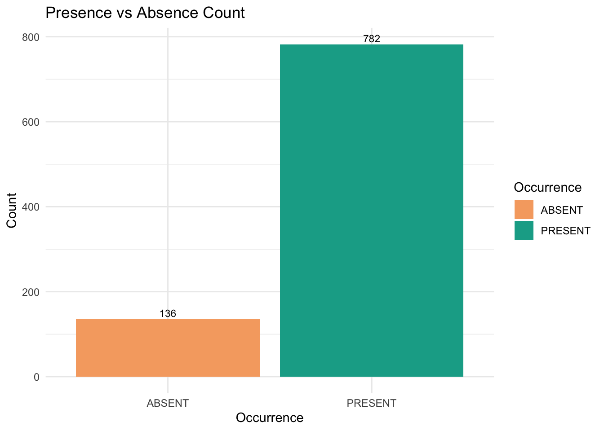
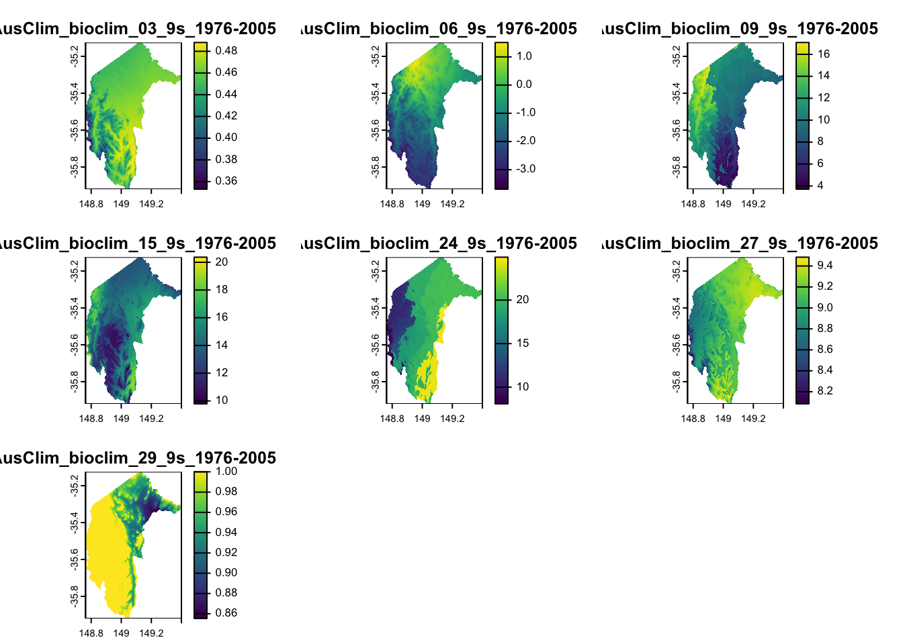
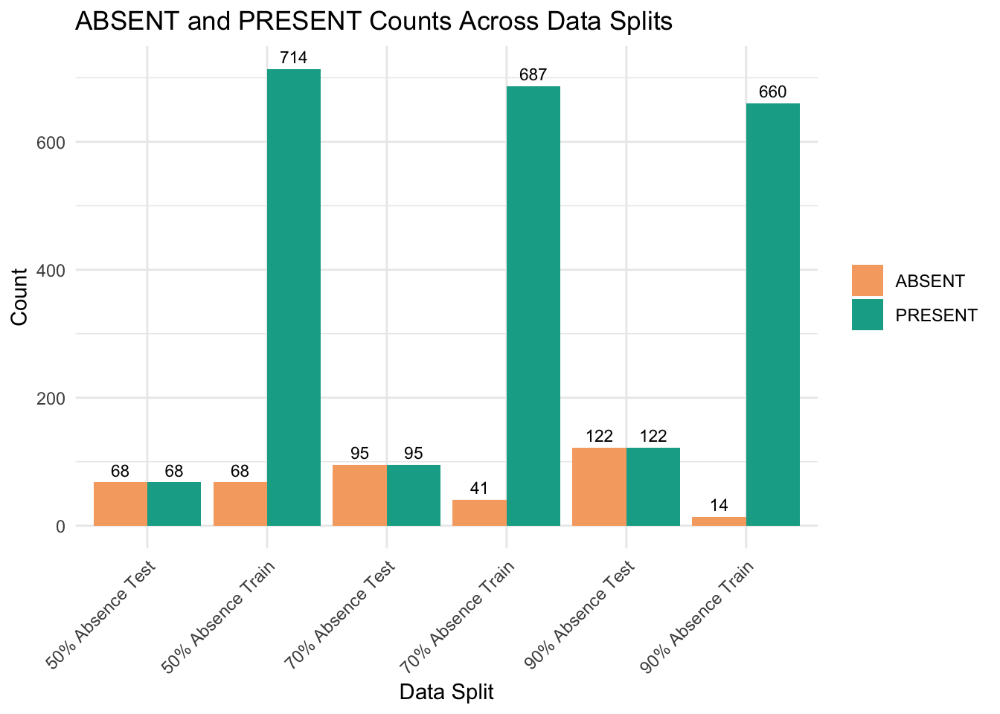
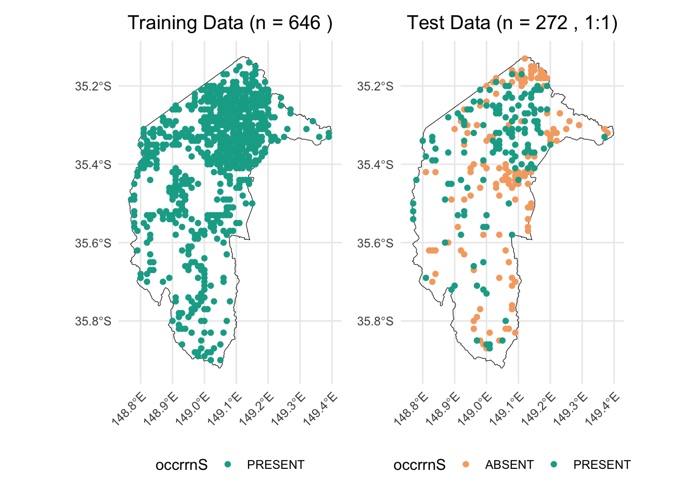
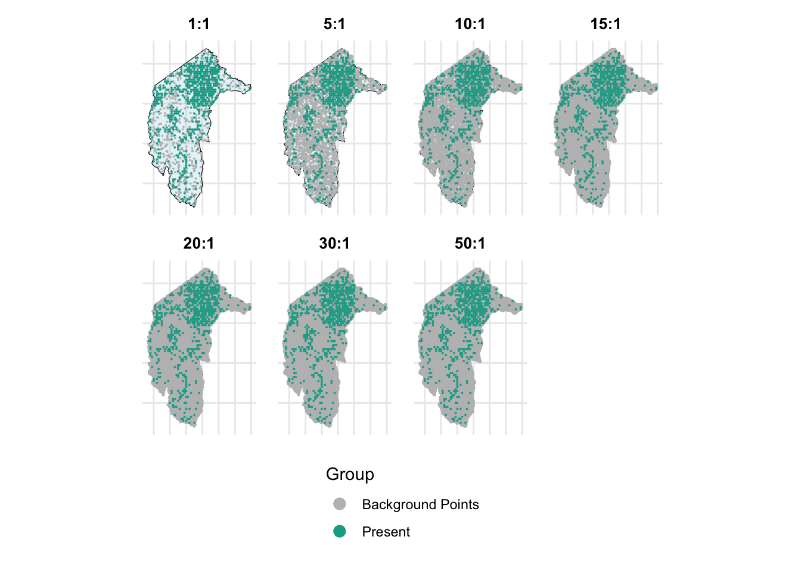
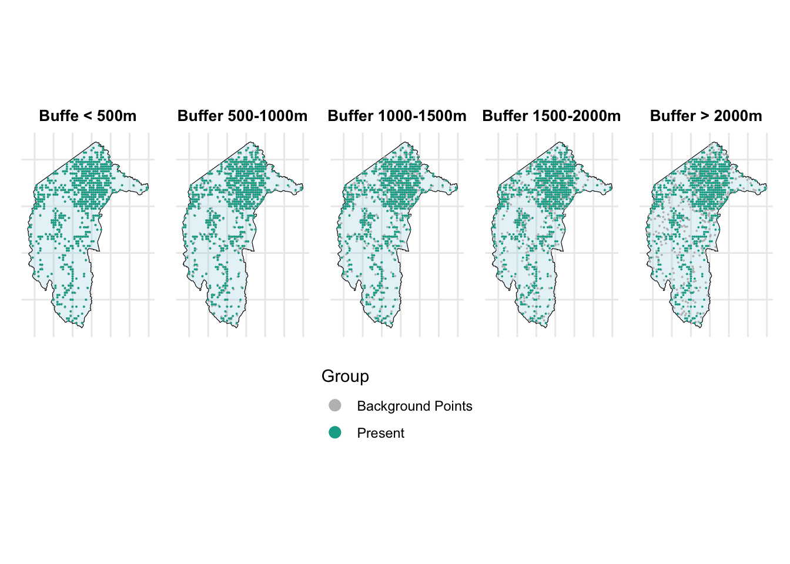

# Set the workspace to the current working directory
workspace <- getwd() # Get the current working directory and store it in 'workspace'
# Increase the plot size by adjusting the options for plot dimensions in the notebook output
options(repr.plot.width = 16, repr.plot.height = 8) # Sets width to 16 and height to 8 for larger plots
Imbalanced species data, background points, and weighting methods
Author details: Xiang Zhao
Editor details: Dr Sebastian Lopez Marcano
Contact details: support@ecocommons.org.au
Copyright statement: This script is the product of the EcoCommons platform. Please refer to the EcoCommons website for more details: https://www.ecocommons.org.au/
Date: February 2025
Script and data info:
This notebook, developed by the EcoCommons team, showcases how to deal with imbalanced species datasets (presence and absence data) with serveral methods.
Abstract
When building species distribution models, it is common to encounter imbalanced datasets. This may involve a large number of presence records and relatively few absence records, or, in the case of rare species, a substantial number of absence records but only a limited number of presence records.
Using imbalanced datasets making models and predictions can result in many unintended issues, such as bias towards the majority class, misleading performance metrics, poor sensitivity for the minority class, etc. Because the model has more information from the prevalent class than the rare events (Menardi & Torelli, 2014). Thus, we need to deal with imbalanced datasets.
This notebook explores strategies to address the challenges posed by imbalanced species data in ecological modeling, particularly in Species Distribution Models (SDMs). It focuses on the use of background points and weighting methods to improve model performance when presence and absence data are disproportionate. The study examines the effectiveness of different pseudo-absence generation techniques, including random and buffered-random background point sampling, and applies weighting schemes to mitigate class imbalance. Using the Gang-gang Cockatoo as a case study, the analysis demonstrates the impact of these methods on model evaluation metrics such as AUROC, AUPR, F1-score, and TSS. This guide aims to equip ecologists and data scientists with practical approaches for handling imbalanced datasets, ensuring more accurate and reliable SDMs within the EcoCommons platform.
Objectives
- Understand what are imbalanced datasets and the influence of it on the performance of models.
- Understand using weigthing methods to improve the issue of imbalanced datasets.
- Know how to generate background points with two methods: completely random and buffered-random.
- Learn how to compare the performance of models using difference methods of producing background points and pseudo absence data.
Workflow Overview:
Set the working directory and load the necessary R packages. Create directories to store raw data files.
Data Download: Download prepared imbalanced dataset from our Google Drive.
Data preparation and split.
Model evaluation and comparison.
In the near future, this material may form part of comprehensive support materials available to EcoCommons users. If you have any corrections or suggestions to improve the effeciengy, please contact the EcoCommons team.

Set-up: R Environment and Packages
Some housekeeping before we start. This process might take some time as many packages needed to be installed.
S.1 Set the working directory and create a folder for data.
Save the Quarto Markdown file (.QMD) to a folder of your choice, and then set the path to your folder as your working directory.
Ideally, you would use the renv package to create an isolated environment for installing all the required R packages used in this notebook. However, since installing renv and its dependencies can be time-consuming, we recommend trying this after the workshop.
# # Ensure "renv" package is installed
# if (!requireNamespace("renv", quietly = TRUE)) {
# install.packages("renv")
# }
#
# # Check if renv has been initialised in the project
# if (!file.exists("renv/activate.R")) {
# message("renv has not been initiated in this project. Initializing now...")
# renv::init() # Initialise renv if not already set up
# } else {
# source("renv/activate.R") # Activate the renv environment
# message("renv is activated.")
# }
#
# # Check for the existence of renv.lock and restore the environment
# if (file.exists("renv.lock")) {
# message("Restoring renv environment from renv.lock...")
# renv::restore()
# } else {
# message("No renv.lock file found in the current directory. Skipping restore.")
# }S.2 Install and load essential libraries.
Install and load R packages.
# Set CRAN mirror
options(repos = c(CRAN = "https://cran.rstudio.com/"))
# List of packages to check, install if needed, and load
packages <- c("dplyr", "reshape2", "terra", "sf", "googledrive", "ggplot2", "corrplot",
"pROC", "dismo", "spatstat.geom", "patchwork", "biomod2", "PRROC",
"leaflet", "car", "gridExtra", "htmltools", "RColorBrewer", "kableExtra", "tibble")
# Function to display a cat message
cat_message <- function(pkg, message_type) {
if (message_type == "installed") {
cat(paste0(pkg, " has been installed successfully!\n"))
} else if (message_type == "loading") {
cat(paste0(pkg, " is already installed and has been loaded!\n"))
}
}
# Install missing packages and load them
for (pkg in packages) {
if (!requireNamespace(pkg, quietly = TRUE)) {
install.packages(pkg)
cat_message(pkg, "installed")
} else {
cat_message(pkg, "loading")
}
library(pkg, character.only = TRUE)
}dplyr is already installed and has been loaded!reshape2 is already installed and has been loaded!
terra is already installed and has been loaded!sf is already installed and has been loaded!googledrive is already installed and has been loaded!
ggplot2 is already installed and has been loaded!
corrplot is already installed and has been loaded!pROC is already installed and has been loaded!dismo is already installed and has been loaded!spatstat.geom is already installed and has been loaded!patchwork is already installed and has been loaded!biomod2 is already installed and has been loaded!PRROC is already installed and has been loaded!
leaflet is already installed and has been loaded!
car is already installed and has been loaded!gridExtra is already installed and has been loaded!htmltools is already installed and has been loaded!
RColorBrewer is already installed and has been loaded!
kableExtra is already installed and has been loaded!tibble is already installed and has been loaded!# If you are using renv, you can snapshot the renv after loading all the packages.
#renv::snapshot()S.3 Download case study datasets
We have prepared the following data and uploaded them to our Google Drive for your use:
Species occurrence data: Shapefile format (.shp)
Environmental variables: Stacked Raster format (.tif)
Study area boundary: Shapefile format (.shp)
# De-authenticate Google Drive to access public files
drive_deauth()
# Define Google Drive file ID and the path for downloading
zip_file_id <- "1GXOA330Ow2F7NqxdhuBfbz0a-CMT8DTb" # Replace with the actual file ID of the zipped file
datafolder_path <- file.path(workspace)
# Create a local path for the zipped file
zip_file_path <- file.path(datafolder_path, "imbalanced_data.zip")
# Function to download a file with progress messages
download_zip_file <- function(file_id, file_path) {
cat("Downloading zipped file...\n")
drive_download(as_id(file_id), path = file_path, overwrite = TRUE)
cat("Downloaded zipped file to:", file_path, "\n")
}
# Create local directory if it doesn't exist
if (!dir.exists(datafolder_path)) {
dir.create(datafolder_path, recursive = TRUE)
}
# Download the zipped file
cat("Starting to download the zipped file...\n")Starting to download the zipped file...download_zip_file(zip_file_id, zip_file_path)Downloading zipped file...Downloaded zipped file to: /Users/xiangzhaoqcif/Documents/Documents - QCIF’s MacBook Pro (2)/github/notebook-blog/notebooks/data_prep/imbalanced_data.zip # Unzip the downloaded file
cat("Unzipping the file...\n")Unzipping the file...unzip(zip_file_path, exdir = datafolder_path)
cat("Unzipped files to folder:", datafolder_path, "\n")Unzipped files to folder: /Users/xiangzhaoqcif/Documents/Documents - QCIF’s MacBook Pro (2)/github/notebook-blog/notebooks/data_prep 1. Introduction
1.1 Imbalanced binary species dataset
Imbalanced datasets are not unusual. Shown as the figure below, a dataset is imbalanced if the classifications are not equally represented (Chawla et al., 2002).

In the case of binary species records, presence and absence of a species, there is a common scenario of imbalanced datasets: too many presences. The phenomenon of too many presences in a species record dataset is quite dominant. In many open access biodiversity data portals, like the Global Biodiversity Information Facility (GBIF, https://www.gbif.org/) and Atlas of Living Australia (ALA, https://www.ala.org.au/), most of species only have present records.
Undesired outcomes of using imbalanced dataset for modelling and prediction. For example, because presences dominate the training set, the model may be inclined to predict presence more often to minimize overall errors. You may see high sensitivity (true positive rate, correctly identifying most presences) but low specificity (true negative rate) (Johnson et al., 2012). Thus, dealing with imbalanced data before fitting SDMs is a necessary step.
1.2 Weighting methods
Many studies show that weighting methods can improve SDM performance (Benkendorf et al., 2023; Chen et al., 2004; Zhang et al., 2020). Applying class weights to SDM algorithm so the cost of misclassifying the minority class can be elevated relative to the cost of misclassifying the majority class (Benkendorf et al., 2023).
For example, if a dataset contains 900 presences and 100 absences, the ratio of classes is 9:1. To compensate for this imbalance, class weights can be assigned inversely proportional to class frequencies. In this case, a weight of 1 would be assigned to the majority class (presences) and a weight of 9 to the minority class (absences). This means the model incurs a 9× cost for misclassifying an absence relative to a presence. Such reweighting has been shown to improve the tradeoff between model sensitivity and specificity. Specifically, although increases in sensitivity are often accompanied by decreases in specificity and overall accuracy, applying these class weights can help achieve a better balance.
In this notebook, we use a very simple weighting methods used by Elith et al. (Elith* et al., 2006) and Valavi et al. (Valavi et al., 2022). The weights are generated by giving a weight of 1 to every presence location and give the weights to the background in a way that the sum of the weights for the presence and background samples are equal.
# Load necessary library
library(dplyr)
# 1️⃣ Create a toy dataset
set.seed(123) # For reproducibility
# Example data frame with presence (1) and background/absence (0)
train_data <- data.frame(
id = 1:10,
occrrnS = c(rep(1, 7), rep(0, 3)) # 7 presence points, 3 background points
)
# 2️⃣ Calculate weights
# Count the number of presence and background points
prNum <- sum(train_data$occrrnS == 1)
bgNum <- sum(train_data$occrrnS == 0)
# Apply weights: presence = 1, background = prNum / bgNum
wt <- ifelse(train_data$occrrnS == 1, 1, prNum / bgNum)
# Add weights to the data frame
train_data <- train_data %>%
mutate(weight = wt)
# 3️⃣ Display the final dataset with weights
print(train_data) id occrrnS weight
1 1 1 1.000000
2 2 1 1.000000
3 3 1 1.000000
4 4 1 1.000000
5 5 1 1.000000
6 6 1 1.000000
7 7 1 1.000000
8 8 0 2.333333
9 9 0 2.333333
10 10 0 2.333333The sum of the weights for 1 (Present) is 7 × 1 = 7, which is equal to the sum of the weights for 0 (Absent), 2.33 × 3 = 7. This weighting method will be used to address the imbalanced dataset issue in this notebook.
1.3 Background points and Pseudo-absence points
When working with presence-only records for your study species, a common approach is to sample a relatively large number of random samples from the study area. These random samples area referred to background or pseudo-absence points (Valavi et al., 2022).
There are two common approaches of generating background points. The first involves randomly selecting background points from the entire extent of the study area, allowing observations to be compared against the full range of environmental conditions within that area (Elith* et al., 2006; Phillips et al., 2006). The second approach generates background points within a specified minimum-maximum radius around presence points-a method referred to as the “disk” approach in EcoCommons Platform.
For more information about background points, pseudo-absence data, please check out our support article Absence Data.
1.4 Evaluation metric
Several studies suggest how to evaluate the model performance of imbalanced dataset (Barbet-Massin et al., 2012; Gaul et al., 2022; Johnson et al., 2012; Zhang et al., 2020). We select these to use in this notebook:
| Metric | What it Tells You | Optimized When |
|---|---|---|
| AUROC (Area Under ROC Curve) | Ability of the model to distinguish between classes | When overall discriminative power is important |
| CORR (Correlation between the observation in the occurrence dataset and the prediction) | Degree of correlation between predicted and observed values | When assessing the strength and direction of relationships |
| Precision | Proportion of positive predictions that are correct | False positives need to be minimized |
| Recall | Ability to capture actual positives | Missing positives has severe consequences |
| Specificity | Ability to correctly identify negatives | False positives need to be minimized |
| F1-Score | Balance between Precision and Recall | Both false positives and false negatives are costly |
| AUPR (Area Under Precision-Recall Curve) | Performance on imbalanced datasets focusing on positive class | When positive class is rare and critical |
| TSS (True Skill Statistic) | Skill of the model beyond random chance | When evaluating presence/absence models in ecological studies |
2 Overview and Conceptualisation
2.1 Model objective
This notebook focuses not on creating a perfect Species Distribution Model (SDM) for the Gang-gang Cockatoo, but on comparing different methods for addressing class imbalance in binary species datasets and evaluating their effectiveness in improving SDM performance.
2.2 Taxon, location, data, scale, and model algorithm
Taxon: Gang-gang Cockatoo (Callocephalon fimbriatum)

Photographer: Kym Nicolson, ALA
The Gang-gang Cockatoo (Callocephalon fimbriatum) is endemic to southeastern Australia, with its distribution primarily spanning higher elevations and southern latitudes, including regions in New South Wales, Victoria, and the Australian Capital Territory. It inhabits temperate eucalypt forests and woodlands, favoring wet sclerophyll forests with dense acacia and banksia understories during the summer months, while moving to drier, open woodlands at lower altitudes in winter. The species is well-adapted to cooler climates and often forages in parks and suburban gardens.
However, Gang-gang Cockatoos face significant threats, including habitat loss due to land clearing, wildfire damage, and competition for nesting hollows with other species. Climate change, particularly increased fire frequency and altered rainfall patterns, poses additional risks to their survival. The species suffered a drastic population decline, exacerbated by the 2019/2020 bushfires, which burned approximately 28–36% of its habitat, leading to a projected long-term decline in population size.
Location: Australian Capital Territory (ACT, study area)
Spatial and temporal scales: small (spatial) and static (temporal)
model algorithm: Generalised linear model (GLM)
2.3 Imbalanced biodiversity data
Understanding your species is essential. This includes knowing their common names (which may include multiple names) and scientific name to ensure you collect the most comprehensive records available in open-access biodiversity data portals, such as the Atlas of Living Australia (ALA) or the Global Biodiversity Information Facility (GBIF).
For this exercise, we have prepared a species occurrence data file in CSV format, which was downloaded from ALA. To make it accessible, we have stored this file in the EcoCommons Public Google Drive for you to download and use conveniently.
# Read the shapefile for Gang-gang Cockatoo occurrence point dataset
gang_gang_act <- st_read("imbalanced_data/gang_gang_ACT.shp")Reading layer `gang_gang_ACT' from data source
`/Users/xiangzhaoqcif/Documents/Documents - QCIF’s MacBook Pro (2)/github/notebook-blog/notebooks/data_prep/imbalanced_data/gang_gang_ACT.shp'
using driver `ESRI Shapefile'
Simple feature collection with 918 features and 1 field
Geometry type: POINT
Dimension: XY
Bounding box: xmin: 148.77 ymin: -35.9 xmax: 149.39 ymax: -35.13
Geodetic CRS: GDA94# Read the shapefile for ACT dataset
ACT <- st_read("imbalanced_data/ACT_4283.shp")Reading layer `ACT_4283' from data source
`/Users/xiangzhaoqcif/Documents/Documents - QCIF’s MacBook Pro (2)/github/notebook-blog/notebooks/data_prep/imbalanced_data/ACT_4283.shp'
using driver `ESRI Shapefile'
Simple feature collection with 1 feature and 0 fields
Geometry type: POLYGON
Dimension: XY
Bounding box: xmin: 148.7628 ymin: -35.92053 xmax: 149.3993 ymax: -35.12442
Geodetic CRS: GDA94# Create leaflet map
leaflet() %>%
addProviderTiles(providers$Esri.WorldImagery) %>%
# Add the ACT layer with a distinct color
addPolygons(
data = ACT,
color = "lightblue", # Border color of ACT polygon
weight = 1, # Border width
fillColor = "lightblue", # Fill color of ACT
fillOpacity = 0.3, # Transparency for fill
group = "ACT"
) %>%
# Add Gang-gang Cockatoo presence/absence points from the same shapefile
addCircleMarkers(
data = gang_gang_act,
color = ~ifelse(occrrnS == "PRESENT", "#11aa96", "#f6aa70"), # Dynamically set color based on occrrnS
radius = 1,
weight = 0.5,
opacity = 1,
fillOpacity = 1,
group = "Gang-gang Cockatoo Records"
) %>%
setView(lng = 149, lat = -35.5, zoom = 8) %>% # Set the view to desired location
# Add layer controls for toggling
addLayersControl(
overlayGroups = c("ACT", "Gang-gang Cockatoo Records"),
options = layersControlOptions(collapsed = FALSE)
) %>%
# Add a legend for the layers
addControl(
html = "
<div style='background-color: white; padding: 10px; border-radius: 5px;'>
<strong>Legend</strong><br>
<i style='background: lightblue; width: 18px; height: 18px; display: inline-block; margin-right: 8px; opacity: 0.7;'></i>
ACT Boundary<br>
<i style='background: #11aa96; width: 10px; height: 10px; border-radius: 50%; display: inline-block; margin-right: 8px;'></i>
Gang-gang Cockatoo Presence<br>
<i style='background: #f6aa70; width: 10px; height: 10px; border-radius: 50%; display: inline-block; margin-right: 8px;'></i>
Gang-gang Cockatoo Absence
</div>
",
position = "bottomright"
)Now, let’s calculate the number of presences and absences in the dataset to assess the extent of imbalance.
# Calculate counts of presence (PRESENT) and absence (ABSENT)
occ_counts <- table(gang_gang_act$occrrnS)
# Convert to data frame for plotting
occ_df <- as.data.frame(occ_counts)
colnames(occ_df) <- c("Occurrence", "Count")
# Create bar plot with custom colors
ggplot(occ_df, aes(x = Occurrence, y = Count, fill = Occurrence)) +
geom_bar(stat = "identity") +
geom_text(
aes(label = Count),
vjust = -0.3,
size = 3
) +
labs(
title = "Presence vs Absence Count",
x = "Occurrence",
y = "Count"
) +
scale_fill_manual(values = c("PRESENT" = "#11aa96", "ABSENT" = "#f6aa70")) +
theme_minimal()
We can see the amount of Gang-gang Cockatoo absent records are way less than its present records.
2.4 Environmental variables
We conducted several tests and selected seven environmental variables for this case study. For more information on preparing environmental datasets and selecting environmental variables, please refer to our notebooks: Raster-preparation and GLM (section 2.3-3.1).
| Variable code | Description |
|---|---|
| AusClim_bioclim_03_9s_1976-2005 | Isothermality (BIO3) — Mean Diurnal Range / Annual Temp Range × 100 |
| AusClim_bioclim_06_9s_1976-2005 | Min Temperature of Coldest Month (BIO6) |
| AusClim_bioclim_09_9s_1976-2005 | Mean Temperature of Driest Quarter (BIO9) |
| AusClim_bioclim_15_9s_1976-2005 | Precipitation Seasonality (Coefficient of Variation) (BIO15) |
| AusClim_bioclim_24_9s_1976-2005 | Annual Mean Moisture Index (custom or derived bioclim variable) |
| AusClim_bioclim_27_9s_1976-2005 | Mean Moisture Index of Driest Quarter (custom/derived) |
| AusClim_bioclim_29_9s_1976-2005 | Mean Radiation of Warmest Quarter (custom/derived) |
# Load the stacked raster layers
env_var_stack <- rast("imbalanced_data/ACT_raster.tif")
# Select the desired layers by their names
selected_layers <- c("AusClim_bioclim_03_9s_1976-2005",
"AusClim_bioclim_06_9s_1976-2005",
"AusClim_bioclim_09_9s_1976-2005",
"AusClim_bioclim_15_9s_1976-2005",
"AusClim_bioclim_24_9s_1976-2005",
"AusClim_bioclim_27_9s_1976-2005",
"AusClim_bioclim_29_9s_1976-2005")
# Subset the raster stack
selected_rasters <- env_var_stack[[selected_layers]]
# Plot all selected layers
plot(selected_rasters)
3. When we have true-absence data
3.1 Including true absence in the training dataset
Including true-absence data in training dataset is always recommended when such data is available (Václavı́k & Meentemeyer, 2009). In this study, we aim to explore the question: ‘how much true-absence data is enough?’ ‘Is more always better?’
To answer this question, we allocate 90%, 70%, 50% of the true absence data, along with an equal amount of present data to the test dataset, using the rest data as training dataset.
Here, we can make a function to split the data as we want.
split_occurrence_data_by_absence_test <- function(data, p_abs_test = 0.9, seed = 123) {
# Set seed for reproducibility
set.seed(seed)
# Identify indices for ABSENT and PRESENT rows
abs_idx <- which(data$occrrnS == "ABSENT")
pres_idx <- which(data$occrrnS == "PRESENT")
# Total number of ABSENT records
n_abs <- length(abs_idx)
# Number of ABSENT records to include in test set
n_test_abs <- round(p_abs_test * n_abs)
# Randomly sample n_test_abs indices from the ABSENT indices for the test set
test_abs_idx <- sample(abs_idx, n_test_abs)
# For the test set, randomly sample an equal number of PRESENT records
test_pres_idx <- sample(pres_idx, n_test_abs)
# Create test data: sampled ABSENT + sampled PRESENT
test_data <- data[c(test_abs_idx, test_pres_idx), ]
# Create training data: the remaining rows (i.e., those not selected for test)
train_data <- data[-c(test_abs_idx, test_pres_idx), ]
return(list(test_data = test_data, train_data = train_data))
}Now, we can use the above function to split the data in three difference ways:
90% of true absence data, along with an equal amount of present data to the test dataset, using the rest data as training dataset.
70% of true absence data, along with an equal amount of present data to the test dataset, using the rest data as training dataset.
50% of the true absence data, along with an equal amount of present data to the test dataset, using the rest data as training dataset.
# For a 90% test split (of the ABSENT records)
split_90_absence <- split_occurrence_data_by_absence_test(gang_gang_act, p_abs_test = 0.9, seed = 123)
# For a 70% test split
split_70_absence <- split_occurrence_data_by_absence_test(gang_gang_act, p_abs_test = 0.7, seed = 123)
# For a 50% test split
split_50_absence <- split_occurrence_data_by_absence_test(gang_gang_act, p_abs_test = 0.5, seed = 123)
# Generate counts from the split data
train_90_absence <- table(split_90_absence$train_data$occrrnS)
test_90_absence <- table(split_90_absence$test_data$occrrnS)
train_70_absence <- table(split_70_absence$train_data$occrrnS)
test_70_absence <- table(split_70_absence$test_data$occrrnS)
train_50_absence <- table(split_50_absence$train_data$occrrnS)
test_50_absence <- table(split_50_absence$test_data$occrrnS)
# Create a data frame with the extracted counts
split_data <- data.frame(
Split = c("90% Absence Train", "90% Absence Test", "70% Absence Train", "70% Absence Test", "50% Absence Train", "50% Absence Test"),
ABSENT = c(train_90_absence["ABSENT"], test_90_absence["ABSENT"],
train_70_absence["ABSENT"], test_70_absence["ABSENT"],
train_50_absence["ABSENT"], test_50_absence["ABSENT"]),
PRESENT = c(train_90_absence["PRESENT"], test_90_absence["PRESENT"],
train_70_absence["PRESENT"], test_70_absence["PRESENT"],
train_50_absence["PRESENT"], test_50_absence["PRESENT"])
)
# Display the table
print(split_data) Split ABSENT PRESENT
1 90% Absence Train 14 660
2 90% Absence Test 122 122
3 70% Absence Train 41 687
4 70% Absence Test 95 95
5 50% Absence Train 68 714
6 50% Absence Test 68 68We can visualise above table in a bar chart.
# Reshape data for ggplot using melt (or use pivot_longer)
split_data_melted <- melt(split_data, id.vars = "Split", variable.name = "Status", value.name = "Count")
# Create the bar plot with labels
ggplot(split_data_melted, aes(x = Split, y = Count, fill = Status)) +
geom_bar(stat = "identity", position = position_dodge(width = 0.9)) + # Adjust bar positions
geom_text(aes(label = Count),
position = position_dodge(width = 0.9),
vjust = -0.5, size = 3) + # Add text labels
labs(title = "ABSENT and PRESENT Counts Across Data Splits", x = "Data Split", y = "Count") +
theme_minimal() +
scale_fill_manual(values = c("ABSENT" = "#f6aa70", "PRESENT" = "#11aa96")) +
theme(axis.text.x = element_text(angle = 45, hjust = 1)) +
theme(legend.title = element_blank())
Now, we combine the training and test data with environmental dataset.
get_occurrence_data <- function(occurrence_sf, env_var_stack, drop_na = TRUE, dropCols = NULL) {
# Convert the occurrence sf object to a terra SpatVector
occ_vect <- vect(occurrence_sf)
# Extract raster values at the occurrence points
extracted_values <- terra::extract(env_var_stack, occ_vect)
# Combine occurrence data (as a data frame) with the extracted raster values
occ_data <- cbind(as.data.frame(occurrence_sf), extracted_values)
# Optionally remove rows with any NA values
if (drop_na) {
occ_data <- na.omit(occ_data)
}
# Optionally drop specified columns
if (!is.null(dropCols)) {
occ_data <- occ_data[, -dropCols]
}
return(occ_data)
}combine_with_env_data <- function(split_list, env_var_stack, dropCols = c(2,3)) {
# Process the training data
train_data_env <- get_occurrence_data(split_list$train_data, env_var_stack, dropCols = dropCols)
# Process the test data
test_data_env <- get_occurrence_data(split_list$test_data, env_var_stack, dropCols = dropCols)
return(list(train_data_env = train_data_env, test_data_env = test_data_env))
}# Then, combine each split with the environmental variables:
env_combined_90 <- combine_with_env_data(split_90_absence, env_var_stack, dropCols = c(2,3))
env_combined_70 <- combine_with_env_data(split_70_absence, env_var_stack, dropCols = c(2,3))
env_combined_50 <- combine_with_env_data(split_50_absence, env_var_stack, dropCols = c(2,3))
# Create a list of three training data data frames
train_list <- list(
"split_90_train" = env_combined_90$train_data_env,
"split_70_train" = env_combined_70$train_data_env,
"split_50_train" = env_combined_50$train_data_env
)
# Create a list of three training data data frames
test_list <- list(
"split_90_test" = env_combined_90$test_data_env,
"split_70_test" = env_combined_70$test_data_env,
"split_50_test" = env_combined_50$test_data_env
)Now, we have three sets of training and test data ready for modelling.
split_90_train & split_90_test
split_70_train & split_70_test
split_50_train & split_50_test
3.2 Un-weighted models
In this section, we will ignore the issue of dataset imbalance and run a GLM SDM model. We will generate all the evaluation metrics mentioned in section 1.4 Evaluation metric.
This is a function running GLM and producing evaluation metrics.
fit_model_and_get_perf_no_wt <- function(train_data_env, test_data_env, tss_step = 0.01) {
# Load required libraries
library(pROC) # For AUROC
library(PRROC) # For AUPR
# 1) Copy data locally
train_data <- train_data_env
test_data <- test_data_env
# Convert occrrnS to 0/1 numeric
train_data$occrrnS <- ifelse(train_data$occrrnS == "PRESENT", 1, 0)
test_data$occrrnS <- ifelse(test_data$occrrnS == "PRESENT", 1, 0)
# Define model formula
my_formula <- occrrnS ~ `AusClim_bioclim_03_9s_1976-2005` +
`AusClim_bioclim_06_9s_1976-2005` +
`AusClim_bioclim_09_9s_1976-2005` +
`AusClim_bioclim_15_9s_1976-2005` +
`AusClim_bioclim_24_9s_1976-2005` +
`AusClim_bioclim_27_9s_1976-2005` +
`AusClim_bioclim_29_9s_1976-2005`
# 2) Fit the unweighted GLM model
model <- glm(my_formula, data = train_data, family = binomial(link = "logit"))
# Predict probabilities on the test data
predicted_probs <- predict(model, newdata = test_data, type = "response")
# -----------------------------
# PART A: Standard metrics at threshold = 0.5
# -----------------------------
pred_class <- ifelse(predicted_probs >= 0.5, 1, 0)
# Force table to have both '0' and '1' as levels
pred_class_factor <- factor(pred_class, levels = c(0,1))
actual_factor <- factor(test_data$occrrnS, levels = c(0,1))
conf_mat <- table(Predicted = pred_class_factor, Actual = actual_factor)
# Safely extract entries
TP <- conf_mat["1","1"]
FP <- conf_mat["1","0"]
FN <- conf_mat["0","1"]
TN <- conf_mat["0","0"]
accuracy <- (TP + TN) / sum(conf_mat)
sensitivity <- TP / (TP + FN) # Recall
specificity <- TN / (TN + FP)
precision <- TP / (TP + FP)
f1 <- 2 * precision * sensitivity / (precision + sensitivity)
# -----------------------------
# PART B: Additional Metrics
# -----------------------------
# AUROC
roc_curve <- pROC::roc(response = test_data$occrrnS, predictor = predicted_probs)
auc_value <- pROC::auc(roc_curve)
# AUPR (Area Under Precision-Recall Curve)
pr <- pr.curve(scores.class0 = predicted_probs[test_data$occrrnS == 1],
scores.class1 = predicted_probs[test_data$occrrnS == 0],
curve = TRUE)
aupr_value <- pr$auc.integral
# Correlation between observed and predicted
corr_value <- cor(test_data$occrrnS, predicted_probs, method = "pearson")
# -----------------------------
# PART C: Sweep thresholds to find max TSS
# -----------------------------
# Helper function to safely compute TSS elements
compute_tss <- function(obs, preds, threshold) {
pred_bin <- ifelse(preds >= threshold, 1, 0)
TP <- sum(pred_bin == 1 & obs == 1)
TN <- sum(pred_bin == 0 & obs == 0)
FP <- sum(pred_bin == 1 & obs == 0)
FN <- sum(pred_bin == 0 & obs == 1)
sens <- if ((TP + FN) > 0) TP / (TP + FN) else NA
spec <- if ((TN + FP) > 0) TN / (TN + FP) else NA
tss_val <- sens + spec - 1
return(list(sensitivity = sens, specificity = spec, TSS = tss_val))
}
thresholds <- seq(0, 1, by = tss_step)
tss_df <- data.frame(
threshold = thresholds,
sensitivity = NA,
specificity = NA,
TSS = NA
)
for (i in seq_along(thresholds)) {
res_tss <- compute_tss(test_data$occrrnS, predicted_probs, thresholds[i])
tss_df$sensitivity[i] <- res_tss$sensitivity
tss_df$specificity[i] <- res_tss$specificity
tss_df$TSS[i] <- res_tss$TSS
}
# Identify the threshold that yields the maximum TSS
max_idx <- which.max(tss_df$TSS)
best_threshold <- tss_df$threshold[max_idx]
best_tss <- tss_df$TSS[max_idx]
best_sens <- tss_df$sensitivity[max_idx]
best_spec <- tss_df$specificity[max_idx]
# -----------------------------
# PART D: Return all metrics
# -----------------------------
return(list(
# The fitted model + raw predictions
model = model,
predicted_probs = predicted_probs,
roc_obj = roc_curve,
auc = as.numeric(auc_value),
aupr = as.numeric(aupr_value),
corr = corr_value,
confusion_matrix_0.5 = conf_mat,
metrics_0.5 = data.frame(
Accuracy = accuracy,
Sensitivity = sensitivity, # Recall
Specificity = specificity,
Precision = precision,
F1 = f1
),
# TSS sweep results
tss_table = tss_df,
best_threshold = best_threshold,
max_tss = best_tss,
best_sensitivity = best_sens,
best_specificity = best_spec
))
}Run models with our three pairs of data and extract the evaluation metrics of these models.
Split_90_absence_unwt: split_90_train & split_90_test
Split_70_absence_unwt: split_70_train & split_70_test
Split_50_absence_unwt: split_50_train & split_50_test
‘unwt’ means unweighted.
# Apply the fit_model_and_get_perf_no_wt function to train and test lists
model_including_true_absence_no_wt <- mapply(fit_model_and_get_perf_no_wt,
train_data_env = train_list,
test_data_env = test_list,
SIMPLIFY = FALSE)
# Build a data frame by extracting each metric from the results
results_including_true_absence_table_no_wt <- data.frame(
AUC = sapply(model_including_true_absence_no_wt, function(x) x$auc),
AUPR = sapply(model_including_true_absence_no_wt, function(x) x$aupr),
CORR = sapply(model_including_true_absence_no_wt, function(x) x$corr),
Accuracy = sapply(model_including_true_absence_no_wt, function(x) x$metrics_0.5$Accuracy),
Sensitivity = sapply(model_including_true_absence_no_wt, function(x) x$metrics_0.5$Sensitivity), # Recall
Specificity = sapply(model_including_true_absence_no_wt, function(x) x$metrics_0.5$Specificity),
Precision = sapply(model_including_true_absence_no_wt, function(x) x$metrics_0.5$Precision),
F1 = sapply(model_including_true_absence_no_wt, function(x) x$metrics_0.5$F1),
Best_Threshold = sapply(model_including_true_absence_no_wt, function(x) x$best_threshold),
Max_TSS = sapply(model_including_true_absence_no_wt, function(x) x$max_tss),
Best_Sensitivity = sapply(model_including_true_absence_no_wt, function(x) x$best_sensitivity),
Best_Specificity = sapply(model_including_true_absence_no_wt, function(x) x$best_specificity)
)We can print the evaluation metrics of all three models in one table.
# Round numeric values to 3 decimal places
results_including_true_absence_table_no_wt <- results_including_true_absence_table_no_wt %>%
mutate(across(where(is.numeric), ~ round(.x, 3)))
# Create the table with smaller font
results_including_true_absence_table_no_wt %>%
kable("html", caption = "Model Evaluation Metrics") %>%
kable_styling(font_size = 12, full_width = FALSE)| AUC | AUPR | CORR | Accuracy | Sensitivity | Specificity | Precision | F1 | Best_Threshold | Max_TSS | Best_Sensitivity | Best_Specificity | |
|---|---|---|---|---|---|---|---|---|---|---|---|---|
| split_90_train | 0.661 | 0.645 | 0.143 | 0.5 | 1 | 0 | 0.5 | 0.667 | 0.97 | 0.172 | 0.852 | 0.320 |
| split_70_train | 0.695 | 0.688 | 0.325 | 0.5 | 1 | 0 | 0.5 | 0.667 | 0.94 | 0.284 | 0.716 | 0.568 |
| split_50_train | 0.664 | 0.643 | 0.317 | 0.5 | 1 | 0 | 0.5 | 0.667 | 0.89 | 0.309 | 0.882 | 0.426 |
3.2.1 Which model is better?
split_70_train shows better overall performance based on AUC, AUPR, CORR, and Best_Specificity.
split_50_train leads in Max_TSS and Best_Sensitivity, indicating it may perform slightly better in balancing true positive and true negative rates.
split_90_train consistently underperforms in most metrics.
3.2.2 Is more always better?
Not necessarily — more true-absence data can help, but only up to a point. The results show that increasing the training data (from 50% to 90%) does not consistently improve the model’s performance. Here’s why:
Performance Improvement with More Absences:
As we increased the proportion of true-absence data from 10% (split_90) to 50% (split_50), there was a clear improvement in several metrics:
AUC rose from 0.661 (split_90) to 0.695 (split_70), showing better discriminatory power with more absences.
AUPR improved similarly, reflecting better precision-recall balance.
Max_TSS increased from 0.172 (split_90) to 0.309 (split_50), indicating a better trade-off between sensitivity and specificity.
Diminishing Returns Beyond a Point:
While moving from 10% to 30% absences (split_90 to split_70) resulted in noticeable improvements, the jump from 30% to 50% (split_70 to split_50) offered smaller gains in AUC and AUPR, suggesting diminishing returns.
3.2.3 How much true-absence data is enough?
30% (split_70) seems to strike a good balance:
It achieved the highest AUC (0.695) and AUPR (0.688).
Best_Specificity (0.568) was highest in split_70, showing better negative prediction performance.
Max_TSS (0.284) is respectable and close to the best value (0.309 in split_50).
50% (split_50) provides the highest TSS (0.309) and Best_Sensitivity (0.882) but doesn’t outperform split_70 on AUC and AUPR. This suggests that too much absence data may dilute the signal and introduce noise.
Please note that these are the primary results and comparisons of models without addressing the imbalanced data issue. Next, we will investigate whether applying weights improves the models and leads to different performance outcomes.
3.3 Weighted models
As explained in Section 1.2 Weighting methods,, we will use a weighting approach to assign more importance to the minority class. To implement this, we adjusted the model code by adding a ‘wt’ parameter and incorporated it into the GLM model.
fit_model_and_get_perf_wt <- function(train_data_env, test_data_env, tss_step = 0.01) {
# Load required libraries
library(pROC) # For AUROC
library(PRROC) # For AUPR
# 1) Copy data
train_data <- train_data_env
test_data <- test_data_env
# Convert occrrnS to 0/1 numeric
train_data$occrrnS <- ifelse(train_data$occrrnS == "PRESENT", 1, 0)
test_data$occrrnS <- ifelse(test_data$occrrnS == "PRESENT", 1, 0)
# 2) Calculate weights: presence gets 1; background gets (prNum / bgNum)
prNum <- sum(train_data$occrrnS == 1)
bgNum <- sum(train_data$occrrnS == 0)
wt <- ifelse(train_data$occrrnS == 1, 1, prNum / bgNum)
# 3) Fit the weighted GLM
my_formula <- occrrnS ~
`AusClim_bioclim_03_9s_1976-2005` +
`AusClim_bioclim_06_9s_1976-2005` +
`AusClim_bioclim_09_9s_1976-2005` +
`AusClim_bioclim_15_9s_1976-2005` +
`AusClim_bioclim_24_9s_1976-2005` +
`AusClim_bioclim_27_9s_1976-2005` +
`AusClim_bioclim_29_9s_1976-2005`
model <- glm(my_formula, data = train_data, weights = wt, family = binomial(link = "logit"))
# Predict probabilities
predicted_probs <- predict(model, newdata = test_data, type = "response")
# -----------------------------
# PART A: Standard metrics at threshold = 0.5
# -----------------------------
pred_class <- ifelse(predicted_probs >= 0.5, 1, 0)
# Force table to have both '0' and '1' levels
pred_class_factor <- factor(pred_class, levels = c(0,1))
actual_factor <- factor(test_data$occrrnS, levels = c(0,1))
conf_mat <- table(Predicted = pred_class_factor, Actual = actual_factor)
# Safely extract entries
TP <- conf_mat["1","1"]
FP <- conf_mat["1","0"]
FN <- conf_mat["0","1"]
TN <- conf_mat["0","0"]
# Compute standard metrics
accuracy <- (TP + TN) / sum(conf_mat)
sensitivity <- TP / (TP + FN) # Recall
specificity <- TN / (TN + FP)
precision <- TP / (TP + FP)
f1 <- 2 * precision * sensitivity / (precision + sensitivity)
# -----------------------------
# PART B: Additional Metrics
# -----------------------------
# AUROC
roc_curve <- pROC::roc(response = test_data$occrrnS, predictor = predicted_probs)
auc_value <- pROC::auc(roc_curve)
# AUPR (Area Under Precision-Recall Curve)
pr <- pr.curve(scores.class0 = predicted_probs[test_data$occrrnS == 1],
scores.class1 = predicted_probs[test_data$occrrnS == 0],
curve = TRUE)
aupr_value <- pr$auc.integral
# Correlation between observed and predicted
corr_value <- cor(test_data$occrrnS, predicted_probs, method = "pearson")
# -----------------------------
# PART C: Sweep thresholds to find max TSS
# -----------------------------
compute_tss <- function(obs, preds, threshold) {
pred_bin <- ifelse(preds >= threshold, 1, 0)
TP <- sum(pred_bin == 1 & obs == 1)
TN <- sum(pred_bin == 0 & obs == 0)
FP <- sum(pred_bin == 1 & obs == 0)
FN <- sum(pred_bin == 0 & obs == 1)
sens <- if ((TP + FN) > 0) TP / (TP + FN) else NA
spec <- if ((TN + FP) > 0) TN / (TN + FP) else NA
tss_val <- sens + spec - 1
return(list(sensitivity = sens, specificity = spec, TSS = tss_val))
}
thresholds <- seq(0, 1, by = tss_step)
tss_df <- data.frame(
threshold = thresholds,
sensitivity = NA,
specificity = NA,
TSS = NA
)
for (i in seq_along(thresholds)) {
out_tss <- compute_tss(test_data$occrrnS, predicted_probs, thresholds[i])
tss_df$sensitivity[i] <- out_tss$sensitivity
tss_df$specificity[i] <- out_tss$specificity
tss_df$TSS[i] <- out_tss$TSS
}
# Identify threshold that yields the maximum TSS
max_idx <- which.max(tss_df$TSS)
best_threshold <- tss_df$threshold[max_idx]
best_tss <- tss_df$TSS[max_idx]
best_sens <- tss_df$sensitivity[max_idx]
best_spec <- tss_df$specificity[max_idx]
# -----------------------------
# PART D: Return all metrics
# -----------------------------
return(list(
# Model and predictions
model = model,
predicted_probs = predicted_probs,
roc_obj = roc_curve,
# Evaluation Metrics
auc = as.numeric(auc_value), # AUROC
aupr = as.numeric(aupr_value), # AUPR
corr = corr_value, # Correlation
# Confusion Matrix at threshold 0.5
confusion_matrix_0.5 = conf_mat,
# Metrics at threshold 0.5
metrics_0.5 = data.frame(
Accuracy = accuracy,
Sensitivity = sensitivity, # Recall
Specificity = specificity,
Precision = precision,
F1 = f1
),
# TSS sweep results
tss_table = tss_df,
best_threshold = best_threshold,
max_tss = best_tss,
best_sensitivity = best_sens,
best_specificity = best_spec
))
}Run models with our three pairs of data and extract the evaluation metrics of these models.
Split_90_absence_wt: split_90_train & split_90_test
Split_70_absence_wt: split_70_train & split_70_test
Split_50_absence_wt: split_50_train & split_50_test
‘wt’ means weighted.
# 1) Fit weighted models for each train/test pair
model_including_true_absence_wt <- mapply(
fit_model_and_get_perf_wt,
train_data_env = train_list,
test_data_env = test_list,
SIMPLIFY = FALSE
)
# 2) Build a data frame by extracting each metric from the results
# Note: 'metrics_0.5' is where threshold=0.5 metrics live.
results_including_true_absence_table_wt <- data.frame(
AUC = sapply(model_including_true_absence_wt, function(x) x$auc), # AUROC
AUPR = sapply(model_including_true_absence_wt, function(x) x$aupr), # AUPR
CORR = sapply(model_including_true_absence_wt, function(x) x$corr), # Correlation
Accuracy = sapply(model_including_true_absence_wt, function(x) x$`metrics_0.5`$Accuracy),
Sensitivity = sapply(model_including_true_absence_wt, function(x) x$`metrics_0.5`$Sensitivity), # Recall
Specificity = sapply(model_including_true_absence_wt, function(x) x$`metrics_0.5`$Specificity),
Precision = sapply(model_including_true_absence_wt, function(x) x$`metrics_0.5`$Precision),
F1 = sapply(model_including_true_absence_wt, function(x) x$`metrics_0.5`$F1),
Best_Threshold = sapply(model_including_true_absence_wt, function(x) x$best_threshold),
Max_TSS = sapply(model_including_true_absence_wt, function(x) x$max_tss),
Best_Sensitivity = sapply(model_including_true_absence_wt, function(x) x$best_sensitivity),
Best_Specificity = sapply(model_including_true_absence_wt, function(x) x$best_specificity)
)We can print the evaluation metrics of all three models in one table.
# Round numeric values to 3 decimal places
results_including_true_absence_table_wt <- results_including_true_absence_table_wt %>%
mutate(across(where(is.numeric), ~ round(.x, 3)))
# Create the table with smaller font
results_including_true_absence_table_wt %>%
kable("html", caption = "Model Evaluation Metrics") %>%
kable_styling(font_size = 12, full_width = FALSE)| AUC | AUPR | CORR | Accuracy | Sensitivity | Specificity | Precision | F1 | Best_Threshold | Max_TSS | Best_Sensitivity | Best_Specificity | |
|---|---|---|---|---|---|---|---|---|---|---|---|---|
| split_90_train | 0.679 | 0.678 | 0.281 | 0.607 | 0.779 | 0.434 | 0.579 | 0.664 | 0.65 | 0.295 | 0.557 | 0.738 |
| split_70_train | 0.697 | 0.690 | 0.336 | 0.647 | 0.674 | 0.621 | 0.640 | 0.656 | 0.49 | 0.295 | 0.705 | 0.589 |
| split_50_train | 0.670 | 0.647 | 0.297 | 0.588 | 0.588 | 0.588 | 0.588 | 0.588 | 0.45 | 0.324 | 0.838 | 0.485 |
3.3.1 General Trends Across Weighted Models
Best Overall Performer:
- split_70_train consistently shows the strongest performance across most metrics, striking a balance between sensitivity and specificity while achieving the highest AUC (0.697) and AUPR (0.690).
Effect of Increasing True-Absence Data:
Increasing the proportion of true-absence data from 10% (split_90) to 50% (split_50) shows mixed effects:
Discrimination metrics (AUC, AUPR) improve from split_90 to split_70 but decline slightly in split_50.
Specificity improves as more absence data is included, while sensitivity tends to decrease.
3.4 Comparing un-weighted and weighted methods.
We combine the performance tables of un-weighted and weighted models to see the differences between these two methods.
#combine two evaluation tables
combined_df <- bind_rows(
results_including_true_absence_table_no_wt %>%
mutate(Source = "No_WT"),
results_including_true_absence_table_wt %>%
mutate(Source = "WT")
) %>%
mutate(across(where(is.numeric), ~ round(.x, 3)))
# Create the table using row names
kable(combined_df, "html", caption = "Model Evaluation Metrics", rownames = TRUE) %>%
kable_styling(font_size = 12, full_width = FALSE)| AUC | AUPR | CORR | Accuracy | Sensitivity | Specificity | Precision | F1 | Best_Threshold | Max_TSS | Best_Sensitivity | Best_Specificity | Source | |
|---|---|---|---|---|---|---|---|---|---|---|---|---|---|
| split_90_train...1 | 0.661 | 0.645 | 0.143 | 0.500 | 1.000 | 0.000 | 0.500 | 0.667 | 0.97 | 0.172 | 0.852 | 0.320 | No_WT |
| split_70_train...2 | 0.695 | 0.688 | 0.325 | 0.500 | 1.000 | 0.000 | 0.500 | 0.667 | 0.94 | 0.284 | 0.716 | 0.568 | No_WT |
| split_50_train...3 | 0.664 | 0.643 | 0.317 | 0.500 | 1.000 | 0.000 | 0.500 | 0.667 | 0.89 | 0.309 | 0.882 | 0.426 | No_WT |
| split_90_train...4 | 0.679 | 0.678 | 0.281 | 0.607 | 0.779 | 0.434 | 0.579 | 0.664 | 0.65 | 0.295 | 0.557 | 0.738 | WT |
| split_70_train...5 | 0.697 | 0.690 | 0.336 | 0.647 | 0.674 | 0.621 | 0.640 | 0.656 | 0.49 | 0.295 | 0.705 | 0.589 | WT |
| split_50_train...6 | 0.670 | 0.647 | 0.297 | 0.588 | 0.588 | 0.588 | 0.588 | 0.588 | 0.45 | 0.324 | 0.838 | 0.485 | WT |
3.4.1 Results of comparison
By comparing the performance of unweighted and weighted models, we find:
(1) The weighted models (WT) significantly outperform the unweighted models (No_WT) in terms of balanced classification, offering better specificity, F1 scores, and TSS — all while maintaining similar AUC and AUPR.
(2) Weighted models improved discrimination (AUC, AUPR) and provided more balanced classification by reducing the bias toward positive predictions.
(3) Specificity improved significantly, correcting the unweighted models’ tendency to overpredict presences (Sensitivity = 1 in unweighted models).
(4) split_70_train (WT) provided the most balanced results:
Highest AUC (0.697) and AUPR (0.690)
Improved Accuracy (0.647) and TSS (0.295)
Balanced Sensitivity (0.674) and Specificity (0.621)
(5) Weighting corrected imbalanced data issues:
Reduced false positives and improved the model’s ability to correctly classify absences.
Optimal thresholds shifted lower, indicating improved model calibration.
| Metric | Unweighted | Weighted |
|---|---|---|
| Sensitivity | Very high (1.0) but at the expense of specificity. | Balanced (~0.58 - 0.77). |
| Specificity | Extremely poor (0.0). | Improved (~0.43 - 0.62). |
| AUC / AUPR | Moderate (0.66 - 0.69). | Similar or slightly better (0.67 - 0.70). |
| F1 Score | Inflated due to perfect recall but low precision. | More balanced (~0.59 - 0.66). |
| TSS | Low (~0.17 - 0.31), poor model skill. | Higher (~0.29 - 0.32), indicating improved skill. |
3.4.2 Summary
Weighting improved overall model performance, especially in addressing the imbalance between presences and absences.
The split_70_train (WT) appears to be the most balanced and effective model.
While sensitivity decreased, the gains in specificity, AUC, and TSS suggest more reliable and generalizable
We should always consider weighting methods when the species binary dataset has an imbalance issue.
4. Background point and pseudo-absence points
In Chapter 3, we explored the scenario where true-absence data is included in the training dataset. However, researchers often lack access to true-absence data when training models, or they may choose to reserve this valuable data for cross-validation purposes, as demonstrated by Elith et al. (Elith* et al., 2006) and Valavi et al. (Valavi et al., 2022).
So, what options do we have when true-absence data isn’t available for training? One common approach is to generate background points or pseudo-absence points and include them in the training dataset as surrogates for true-absence data.
For example, if we allocate all true-absence data along with an equal number of presence records to the test dataset and use the remaining data for training, we would end up with 272 rows in the test dataset (136 true absences and 136 presences) and 646 rows in the training dataset. This results in an approximate 30/70 split between test and training data.
# Identify indices for ABSENCE and PRESENCE rows
abs_idx <- which(gang_gang_act$occrrnS == "ABSENT")
pres_idx <- which(gang_gang_act$occrrnS == "PRESENT")
# Number of ABSENCE rows
n_abs <- length(abs_idx)
# Set seed for reproducibility and sample PRESENCE rows
set.seed(123)
pres_sample_idx <- sample(pres_idx, n_abs)
# Create subdataframe 1: all ABSENCE rows + sampled PRESENCE rows
test_data <- gang_gang_act[c(abs_idx, pres_sample_idx), ]
# Create subdataframe 2: the remaining rows
train_data <- gang_gang_act[-c(abs_idx, pres_sample_idx), ]# Get bounding box from the ACT boundary
act_bbox <- sf::st_bbox(ACT)
# Count the number of points in train and test datasets
n_train <- nrow(train_data)
n_test <- nrow(test_data)
# Create ggplot for the training data with count annotation
p_train <- ggplot() +
geom_sf(data = ACT, fill = NA, color = "black") +
geom_sf(data = train_data, aes(color = occrrnS)) +
scale_color_manual(values = c("PRESENT" = "#11aa96", "ABSENT" = "#f6aa70")) +
ggtitle(paste("Training Data (n =", n_train, ")")) + # Add count to title
coord_sf(
xlim = c(act_bbox["xmin"], act_bbox["xmax"]),
ylim = c(act_bbox["ymin"], act_bbox["ymax"])
) +
theme_minimal() +
theme(
plot.title = element_text(hjust = 0.5, size = 14),
axis.text.x = element_text(angle = 45, hjust = 1),
legend.position = "bottom"
)
# Create ggplot for the test data with count annotation
p_test <- ggplot() +
geom_sf(data = ACT, fill = NA, color = "black") +
geom_sf(data = test_data, aes(color = occrrnS)) +
scale_color_manual(values = c("PRESENT" = "#11aa96", "ABSENT" = "#f6aa70")) +
ggtitle(paste("Test Data (n =", n_test, ", 1:1)")) + # Add count to title
coord_sf(
xlim = c(act_bbox["xmin"], act_bbox["xmax"]),
ylim = c(act_bbox["ymin"], act_bbox["ymax"])
) +
theme_minimal() +
theme(
plot.title = element_text(hjust = 0.5, size = 14),
axis.text.x = element_text(angle = 45, hjust = 1),
legend.position = "bottom"
)
# Combine the two plots side-by-side
combined_plot <- p_train + p_test + patchwork::plot_layout(ncol = 2)
combined_plot
4.1 Random background points
Many studies suggest that the number of background points should be sufficient to comprehensively sample and represent all environments in the study area, or at least a range of background point sizes should be tested. For example, Valavi et al. (Valavi et al., 2022) tested their models with 100 to 100,000 background points. Barbet-Massin et al. (Barbet-Massin et al., 2012) tested 100, 300, 1000, 3000 or 10000 background points.
We here will also test the effect of different sizes of background points on the performance of models. We will test the ratio of background points to true presences from 1:1, 5:1, 10:1, 15:1, 20:1, 30:1, and 50:1 with and without weighting methods.
This is the function generating required number of random background points within the extent of the study area.
# Convert SpatRaster to Raster
studyarea <- raster(env_var_stack$`AusClim_bioclim_01_9s_1976-2005`)
# Count the number of presence points in train_data (assuming presence is coded as 1)
n_pres <- nrow(train_data)
# Set seed for reproducibility
set.seed(1963)
# Generate background points with a 1:1 ratio
random_bg_1to1 <- randomPoints(studyarea, n_pres)
# Generate background points with a 5:1 ratio
random_bg_5to1 <- randomPoints(studyarea, n_pres * 5)
# Generate background points with a 10:1 ratio
random_bg_10to1 <- randomPoints(studyarea, n_pres * 10)
# Generate background points with a 15:1 ratio
random_bg_15to1 <- randomPoints(studyarea, n_pres * 15)
# Generate background points with a 20:1 ratio
random_bg_20to1 <- randomPoints(studyarea, n_pres * 20)
# Generate background points with a 30:1 ratio
random_bg_30to1 <- randomPoints(studyarea, n_pres * 30)
# Generate background points with a 100:1 ratio
random_bg_50to1 <- randomPoints(studyarea, n_pres * 50)combine_bg_with_presence <- function(bg_points, train_data, raster_obj, target_crs = 4283, occ_label = "bg") {
# Convert the background points matrix to a data frame
bg_df <- as.data.frame(bg_points)
# Add the occrrnS column with the specified label (e.g., "bg")
bg_df$occrrnS <- occ_label
# Convert the data frame to an sf object using the raster's projection
bg_sf <- st_as_sf(bg_df, coords = c("x", "y"), crs = projection(raster_obj))
# Transform the sf object to the target CRS (default is EPSG:4283)
bg_sf_target <- st_transform(bg_sf, crs = target_crs)
# Combine the original (presence) data with the background points
combined <- rbind(train_data, bg_sf_target)
return(combined)
}We then combine the generated background points with true present data.
combined_random_bg_1to1 <- combine_bg_with_presence(random_bg_1to1, train_data, studyarea)
combined_random_bg_5to1 <- combine_bg_with_presence(random_bg_5to1, train_data, studyarea)
combined_random_bg_10to1 <- combine_bg_with_presence(random_bg_10to1, train_data, studyarea)
combined_random_bg_15to1 <- combine_bg_with_presence(random_bg_15to1, train_data, studyarea)
combined_random_bg_20to1 <- combine_bg_with_presence(random_bg_20to1, train_data, studyarea)
combined_random_bg_30to1 <- combine_bg_with_presence(random_bg_30to1, train_data, studyarea)
combined_random_bg_50to1 <- combine_bg_with_presence(random_bg_50to1, train_data, studyarea)create_map_plot <- function(bg_sf, title, point_size = 0.5) {
# Ensure correct factor levels
bg_sf$occrrnS <- factor(bg_sf$occrrnS, levels = c("PRESENT", "bg"))
# Split the data into background and present points
bg_only <- bg_sf[bg_sf$occrrnS == "bg", ]
present_only <- bg_sf[bg_sf$occrrnS == "PRESENT", ]
ggplot() +
# Add the ACT polygon layer (without including it in the legend)
geom_sf(data = ACT, fill = "lightblue", color = "black", alpha = 0.3, show.legend = FALSE) +
# Plot background points first with mapped color
geom_sf(data = bg_only, aes(color = "Background Points"), size = point_size, show.legend = TRUE) +
# Plot present points on top with mapped color
geom_sf(data = present_only, aes(color = "Present"), size = point_size, show.legend = TRUE) +
# Manual color mapping
scale_color_manual(
name = "Group",
values = c("Present" = "#11aa96", "Background Points" = "grey")
) +
# Legend with larger points
guides(color = guide_legend(override.aes = list(size = 3))) +
ggtitle(title) +
coord_sf(lims_method = "geometry_bbox") +
theme_minimal() +
theme(
legend.position = "right",
plot.title = element_text(hjust = 0.5, size = 10, face = "bold"),
axis.title = element_blank(),
axis.text = element_blank(),
axis.ticks = element_blank()
)
}
# Create plots for each background ratio
p1 <- create_map_plot(combined_random_bg_1to1, "1:1", point_size = 0.01)
p2 <- create_map_plot(combined_random_bg_5to1, "5:1", point_size = 0.01)
p3 <- create_map_plot(combined_random_bg_10to1, "10:1", point_size = 0.01)
p4 <- create_map_plot(combined_random_bg_15to1, "15:1", point_size = 0.01)
p5 <- create_map_plot(combined_random_bg_20to1, "20:1", point_size = 0.01)
p6 <- create_map_plot(combined_random_bg_30to1, "30:1", point_size = 0.01)
p7 <- create_map_plot(combined_random_bg_50to1, "50:1", point_size = 0.01)
# Combine the plots with a shared legend at the bottom
combined_plot <- (p1 + p2 + p3 + p4 + p5 + p6 + p7) +
plot_layout(ncol = 4, guides = "collect") + # Collects the legend into one
plot_annotation(theme = theme(legend.position = "bottom"))
combined_plot
Then, we combine occurrence data with environmental variables.
train_data_list <- list(
combined_random_bg_1to1_env = get_occurrence_data(combined_random_bg_1to1, env_var_stack, dropCols = c(2,3)),
combined_random_bg_5to1_env = get_occurrence_data(combined_random_bg_1to1, env_var_stack, dropCols = c(2,3)),
combined_random_bg_10to1_env = get_occurrence_data(combined_random_bg_1to1, env_var_stack, dropCols = c(2,3)),
combined_random_bg_15to1_env = get_occurrence_data(combined_random_bg_10to1, env_var_stack, dropCols = c(2,3)),
combined_random_bg_20to1_env = get_occurrence_data(combined_random_bg_1to1, env_var_stack, dropCols = c(2,3)),
combined_random_bg_30to1_env = get_occurrence_data(combined_random_bg_1to1, env_var_stack, dropCols = c(2,3)),
combined_random_bg_50to1_env = get_occurrence_data(combined_random_bg_50to1, env_var_stack, dropCols = c(2,3))
)
test_data_env <- get_occurrence_data(test_data, env_var_stack, dropCols = c(2,3))When the ratio of background points to true presences exceeds 1:1—such as 5:1, 10:1, 15:1, 20:1, 30:1, and 50:1—an imbalanced dataset issue is introduced. To address this imbalance, we need to use weighting methods.
# 1) Fit weighted models and extract results
results_list_wt <- lapply(train_data_list, function(train_data) {
fit_model_and_get_perf_wt(train_data, test_data_env)
})
# 2) Build a data frame by extracting each metric from the results_list_wt
results_table_wt_random <- data.frame(
AUC = sapply(results_list_wt, function(x) x$auc), # AUROC
AUPR = sapply(results_list_wt, function(x) x$aupr), # Area Under Precision-Recall Curve
CORR = sapply(results_list_wt, function(x) x$corr), # Correlation
Accuracy = sapply(results_list_wt, function(x) x$metrics_0.5$Accuracy), # Accuracy at threshold 0.5
Sensitivity = sapply(results_list_wt, function(x) x$metrics_0.5$Sensitivity),# Sensitivity (Recall)
Specificity = sapply(results_list_wt, function(x) x$metrics_0.5$Specificity),# Specificity
Precision = sapply(results_list_wt, function(x) x$metrics_0.5$Precision), # Precision
F1 = sapply(results_list_wt, function(x) x$metrics_0.5$F1), # F1 Score
Best_Threshold = sapply(results_list_wt, function(x) x$best_threshold), # Best threshold based on TSS
Max_TSS = sapply(results_list_wt, function(x) x$max_tss), # Maximum TSS
Best_Sensitivity = sapply(results_list_wt, function(x) x$best_sensitivity), # Sensitivity at Best Threshold
Best_Specificity = sapply(results_list_wt, function(x) x$best_specificity) # Specificity at Best Threshold
)Print the results.
# Round numeric values to 3 decimal places
results_table_wt_random <- results_table_wt_random %>%
mutate(across(where(is.numeric), ~ round(.x, 3)))
# Create the table with smaller font
results_table_wt_random %>%
kable("html", caption = "Model Evaluation Metrics") %>%
kable_styling(font_size = 12, full_width = FALSE)| AUC | AUPR | CORR | Accuracy | Sensitivity | Specificity | Precision | F1 | Best_Threshold | Max_TSS | Best_Sensitivity | Best_Specificity | |
|---|---|---|---|---|---|---|---|---|---|---|---|---|
| combined_random_bg_1to1_env | 0.580 | 0.569 | 0.116 | 0.562 | 0.713 | 0.412 | 0.548 | 0.620 | 0.61 | 0.154 | 0.456 | 0.699 |
| combined_random_bg_5to1_env | 0.580 | 0.569 | 0.116 | 0.562 | 0.713 | 0.412 | 0.548 | 0.620 | 0.61 | 0.154 | 0.456 | 0.699 |
| combined_random_bg_10to1_env | 0.580 | 0.569 | 0.116 | 0.562 | 0.713 | 0.412 | 0.548 | 0.620 | 0.61 | 0.154 | 0.456 | 0.699 |
| combined_random_bg_15to1_env | 0.568 | 0.563 | 0.090 | 0.537 | 0.669 | 0.404 | 0.529 | 0.591 | 0.65 | 0.176 | 0.324 | 0.853 |
| combined_random_bg_20to1_env | 0.580 | 0.569 | 0.116 | 0.562 | 0.713 | 0.412 | 0.548 | 0.620 | 0.61 | 0.154 | 0.456 | 0.699 |
| combined_random_bg_30to1_env | 0.580 | 0.569 | 0.116 | 0.562 | 0.713 | 0.412 | 0.548 | 0.620 | 0.61 | 0.154 | 0.456 | 0.699 |
| combined_random_bg_50to1_env | 0.571 | 0.559 | 0.097 | 0.533 | 0.662 | 0.404 | 0.526 | 0.586 | 0.64 | 0.162 | 0.331 | 0.831 |
4.1.1 Results
- Background Ratios up to 10:1
- Metrics remain stable with minimal changes, indicating the model is robust to moderate increases in background points.
(2) High Background Ratios (15:1 and 50:1)
Sensitivity and precision decline, leading to lower F1 scores.
Specificity improves, but at the cost of missing more true positives.
(3) Overall Performance:
Increasing background points beyond 10:1 introduces diminishing returns and eventually harms model balance.
A ratio of 5:1 to 10:1 appears to be a sweet spot, maintaining good sensitivity and specificity without introducing severe imbalances.
4.1.2 Summary
(1) Increasing background points beyond a 10:1 ratio does not consistently improve model performance and may even reduce sensitivity and overall balance.
(2) Moderate background ratios (5:1 to 10:1) provide a balance between sufficient background sampling and maintaining model sensitivity.
(3) At very high ratios (15:1 and 50:1), the model starts favoring background points, leading to poorer detection of presences.
4.2 The ‘disk’ approach
Besides completely random background points, we will also test a ‘disk’ approach to generate random background point methods within a defined range around present records. As the below figure shown, these rings indicate potential areas where pseudo-absence points can be sampled, simulating absence data when real absences are unavailable.

First, we extract present data from the training dataset.
presence_in_train_data <- train_data[train_data$occrrnS == "PRESENT", ]The function generating background points in a defined disk round the presence data.
# 1) Generate random-buffer pseudo-absences within a study area
generate_pseudo_absences_random_buffer <- function(presence_in_train_data,
study_area,
min_buffer, max_buffer,
n_points_per_presence,
seed = 123) {
set.seed(seed)
pseudo_list <- lapply(seq_len(nrow(presence_in_train_data)), function(i) {
# Random distance for this presence point
random_buffer <- runif(1, min = min_buffer, max = max_buffer)
# Create the buffer polygon
buffer_poly <- st_buffer(presence_in_train_data[i, ], dist = random_buffer)
# Intersect buffer with study_area, so we only sample inside it
intersection_poly <- st_intersection(buffer_poly, study_area)
# If there's no overlap, return NULL
if (st_is_empty(intersection_poly)) {
return(NULL)
} else {
# Sample points inside the intersection
st_sample(intersection_poly, size = n_points_per_presence, type = "random")
}
})
# Combine into an sfc
pseudo_sfc <- do.call(c, pseudo_list)
# If all overlaps were empty, pseudo_sfc is NULL
if (is.null(pseudo_sfc)) {
return(NULL)
}
# Convert sfc to sf
pseudo_sf <- st_sf(geometry = pseudo_sfc)
# Label them as "bg"
pseudo_sf$occrrnS <- "bg"
# Keep only the occrrnS column
pseudo_sf <- pseudo_sf[, "occrrnS", drop = FALSE]
return(pseudo_sf)
}
# 2) Combine pseudo-absences with original data
generate_and_combine_pseudo_absences <- function(presence_in_train_data,
train_data,
study_area,
min_buffer, max_buffer,
n_points_per_presence,
seed = 123,
target_crs = 4283) {
# Make sure everything is in the same CRS before buffering/intersecting
presence_in_train_data <- st_transform(presence_in_train_data, target_crs)
study_area <- st_transform(study_area, target_crs)
# Generate pseudo-absence points
pseudo_sf <- generate_pseudo_absences_random_buffer(
presence_in_train_data,
study_area,
min_buffer, max_buffer,
n_points_per_presence,
seed
)
# Convert and combine
original_data <- st_transform(train_data, target_crs)
# If pseudo_sf is NULL (no overlap found), just return original
if (is.null(pseudo_sf)) {
message("No pseudo-absence points generated (buffers might lie outside the study area).")
return(original_data)
}
combined <- rbind(original_data, pseudo_sf)
return(combined)
}Generate background points within these ranges around present records of Gang-gang Cockatoo in the training dataset:
Within 500m
500 - 1000m
1000 - 1500m
1500 - 2000m
More than 2000m
suppressWarnings({ # We want to suppress some irrelevant warnings
disk_bg_500 <- generate_and_combine_pseudo_absences(
presence_in_train_data,
train_data,
min_buffer = 0,
max_buffer = 500,
n_points_per_presence = 1,
seed = 123,
study_area = ACT,
target_crs = 4283
)
disk_bg_500_1000 <- generate_and_combine_pseudo_absences(
presence_in_train_data,
train_data,
min_buffer = 500,
max_buffer = 1000,
n_points_per_presence = 1,
seed = 123,
study_area = ACT,
target_crs = 4283
)
disk_bg_1000_1500 <- generate_and_combine_pseudo_absences(
presence_in_train_data,
train_data,
min_buffer = 1000,
max_buffer = 1500,
n_points_per_presence = 1,
seed = 123,
study_area = ACT,
target_crs = 4283
)
disk_bg_1500_2000 <- generate_and_combine_pseudo_absences(
presence_in_train_data,
train_data,
min_buffer = 1500,
max_buffer = 2000,
n_points_per_presence = 1,
seed = 123,
study_area = ACT,
target_crs = 4283
)
disk_bg_2000 <- generate_and_combine_pseudo_absences(
presence_in_train_data,
train_data,
min_buffer = 2000,
max_buffer = 10000,
n_points_per_presence = 1,
seed = 123,
study_area = ACT,
target_crs = 4283
)
})Let’s plot the generated disk background points.
# Create plots for each background ratio with smaller points
p1 <- create_map_plot(disk_bg_500, "Buffe < 500m", point_size = 0.01)
p2 <- create_map_plot(disk_bg_500_1000, "Buffer 500-1000m", point_size = 0.01)
p3 <- create_map_plot(disk_bg_1000_1500, "Buffer 1000-1500m", point_size = 0.01)
p4 <- create_map_plot(disk_bg_1500_2000, "Buffer 1500-2000m", point_size = 0.01)
p5 <- create_map_plot(disk_bg_2000, "Buffer > 2000m", point_size = 0.01)
# Combine the three plots in one row and collect a common legend at the bottom
combined_plot <- (p1 + p2 + p3+ p4 + p5) +
plot_layout(ncol = 5, guides = "collect") +
plot_annotation(theme = theme(legend.position = "bottom"))
combined_plot
From the above figure, we can see that as the range increases, the grey points (background points) move farther away from the present points.
Now, let’s combine the occurrence data with environmental variables.
train_data_list <- list(
disk_bg_500_env = get_occurrence_data(disk_bg_500, env_var_stack, dropCols = c(2,3)),
disk_bg_500_1000_env = get_occurrence_data(disk_bg_500_1000, env_var_stack, dropCols = c(2,3)),
disk_bg_1000_1500_env = get_occurrence_data(disk_bg_1000_1500, env_var_stack, dropCols = c(2,3)),
disk_bg_1500_2000_env = get_occurrence_data(disk_bg_1500_2000, env_var_stack, dropCols = c(2,3)),
disk_bg_2000_env = get_occurrence_data(disk_bg_2000, env_var_stack, dropCols = c(2,3))
)
test_data_env <- get_occurrence_data(test_data, env_var_stack, dropCols = c(2,3))We can now run the GLM models with these datasets and generate the evaluation metrics. Please note that we created an equal number of background points and present points, so there is no imbalance issue in this case. Thus, we are not using ‘wt’ in the GLM function.
results_list_no_wt <- lapply(train_data_list, function(train_data) {
fit_model_and_get_perf_no_wt(train_data, test_data_env)
})
# 2) Build a data frame by extracting each metric from the results_list_wt
results_table_no_wt_disk <- data.frame(
AUC = sapply(results_list_no_wt, function(x) x$auc), # AUROC
AUPR = sapply(results_list_no_wt, function(x) x$aupr), # Area Under Precision-Recall Curve
CORR = sapply(results_list_no_wt, function(x) x$corr), # Correlation
Accuracy = sapply(results_list_no_wt, function(x) x$metrics_0.5$Accuracy), # Accuracy at threshold 0.5
Sensitivity = sapply(results_list_no_wt, function(x) x$metrics_0.5$Sensitivity),# Sensitivity (Recall)
Specificity = sapply(results_list_no_wt, function(x) x$metrics_0.5$Specificity),# Specificity
Precision = sapply(results_list_no_wt, function(x) x$metrics_0.5$Precision), # Precision
F1 = sapply(results_list_no_wt, function(x) x$metrics_0.5$F1), # F1 Score
Best_Threshold = sapply(results_list_no_wt, function(x) x$best_threshold), # Best threshold based on TSS
Max_TSS = sapply(results_list_no_wt, function(x) x$max_tss), # Maximum TSS
Best_Sensitivity = sapply(results_list_no_wt, function(x) x$best_sensitivity), # Sensitivity at Best Threshold
Best_Specificity = sapply(results_list_no_wt, function(x) x$best_specificity) # Specificity at Best Threshold
)Print the results of models.
# Round numeric values to 3 decimal places
results_table_no_wt_disk <- results_table_no_wt_disk %>%
mutate(across(where(is.numeric), ~ round(.x, 3)))
# Create the table with smaller font
results_table_no_wt_disk %>%
kable("html", caption = "Model Evaluation Metrics") %>%
kable_styling(font_size = 12, full_width = FALSE)| AUC | AUPR | CORR | Accuracy | Sensitivity | Specificity | Precision | F1 | Best_Threshold | Max_TSS | Best_Sensitivity | Best_Specificity | |
|---|---|---|---|---|---|---|---|---|---|---|---|---|
| disk_bg_500_env | 0.536 | 0.541 | 0.083 | 0.529 | 0.471 | 0.588 | 0.533 | 0.500 | 0.50 | 0.059 | 0.471 | 0.588 |
| disk_bg_500_1000_env | 0.582 | 0.542 | 0.156 | 0.574 | 0.625 | 0.522 | 0.567 | 0.594 | 0.50 | 0.147 | 0.625 | 0.522 |
| disk_bg_1000_1500_env | 0.560 | 0.526 | 0.096 | 0.540 | 0.471 | 0.610 | 0.547 | 0.506 | 0.49 | 0.088 | 0.801 | 0.287 |
| disk_bg_1500_2000_env | 0.542 | 0.495 | 0.071 | 0.507 | 0.471 | 0.544 | 0.508 | 0.489 | 0.49 | 0.184 | 0.838 | 0.346 |
| disk_bg_2000_env | 0.538 | 0.453 | -0.049 | 0.478 | 0.463 | 0.493 | 0.477 | 0.470 | 0.49 | 0.044 | 0.735 | 0.309 |
4.2.1 Results
(1) Moderate Buffers Perform Best:
- 500 - 1000m buffer had the best AUC (0.582) and F1 (0.594), indicating a good balance between ecological similarity and separation.
(2) Too Close or Too Far Decreases Performance:
Within 500m: Pseudo-absences too close to presences make it hard for the model to distinguish the two.
Beyond 2000m: Pseudo-absences too far may not represent relevant environmental contrasts, leading to poor predictions.
(3) Sensitivity vs. Specificity Trade-off:
- As background points move farther away, Specificity tends to improve, but Sensitivity decreases, leading to a trade-off between detecting presences and absences.
(4) Correlation Decreases With Distance:
- The CORR metric peaks around 500 - 1000m and then declines, even becoming negative beyond 2000m, indicating the model struggles with very distant background points.
4.2.3 Summary
(1) Optimal Buffer Distance:
- A moderate buffer (e.g., 500 - 1000m) seems to strike the best balance for pseudo-absence sampling in this context.
(2) Avoid Extremes:
- Sampling too close or too far from presence points degrades model performance.
5. Conclusion
5.1 Comparison across all models
Let’s also compare the performance of all good models
#Combine three tables
combined_results_table <- bind_rows(results_including_true_absence_table_wt, results_table_no_wt_disk, results_table_wt_random)
# Step 3: Display the combined table with kable
combined_results_table %>%
kable("html", caption = "Combined Model Evaluation Metrics") %>%
kable_styling(font_size = 12, full_width = FALSE) %>%
column_spec(ncol(combined_results_table), bold = TRUE) # Highlight the Source column| AUC | AUPR | CORR | Accuracy | Sensitivity | Specificity | Precision | F1 | Best_Threshold | Max_TSS | Best_Sensitivity | Best_Specificity | |
|---|---|---|---|---|---|---|---|---|---|---|---|---|
| split_90_train | 0.679 | 0.678 | 0.281 | 0.607 | 0.779 | 0.434 | 0.579 | 0.664 | 0.65 | 0.295 | 0.557 | 0.738 |
| split_70_train | 0.697 | 0.690 | 0.336 | 0.647 | 0.674 | 0.621 | 0.640 | 0.656 | 0.49 | 0.295 | 0.705 | 0.589 |
| split_50_train | 0.670 | 0.647 | 0.297 | 0.588 | 0.588 | 0.588 | 0.588 | 0.588 | 0.45 | 0.324 | 0.838 | 0.485 |
| disk_bg_500_env | 0.536 | 0.541 | 0.083 | 0.529 | 0.471 | 0.588 | 0.533 | 0.500 | 0.50 | 0.059 | 0.471 | 0.588 |
| disk_bg_500_1000_env | 0.582 | 0.542 | 0.156 | 0.574 | 0.625 | 0.522 | 0.567 | 0.594 | 0.50 | 0.147 | 0.625 | 0.522 |
| disk_bg_1000_1500_env | 0.560 | 0.526 | 0.096 | 0.540 | 0.471 | 0.610 | 0.547 | 0.506 | 0.49 | 0.088 | 0.801 | 0.287 |
| disk_bg_1500_2000_env | 0.542 | 0.495 | 0.071 | 0.507 | 0.471 | 0.544 | 0.508 | 0.489 | 0.49 | 0.184 | 0.838 | 0.346 |
| disk_bg_2000_env | 0.538 | 0.453 | -0.049 | 0.478 | 0.463 | 0.493 | 0.477 | 0.470 | 0.49 | 0.044 | 0.735 | 0.309 |
| combined_random_bg_1to1_env | 0.580 | 0.569 | 0.116 | 0.562 | 0.713 | 0.412 | 0.548 | 0.620 | 0.61 | 0.154 | 0.456 | 0.699 |
| combined_random_bg_5to1_env | 0.580 | 0.569 | 0.116 | 0.562 | 0.713 | 0.412 | 0.548 | 0.620 | 0.61 | 0.154 | 0.456 | 0.699 |
| combined_random_bg_10to1_env | 0.580 | 0.569 | 0.116 | 0.562 | 0.713 | 0.412 | 0.548 | 0.620 | 0.61 | 0.154 | 0.456 | 0.699 |
| combined_random_bg_15to1_env | 0.568 | 0.563 | 0.090 | 0.537 | 0.669 | 0.404 | 0.529 | 0.591 | 0.65 | 0.176 | 0.324 | 0.853 |
| combined_random_bg_20to1_env | 0.580 | 0.569 | 0.116 | 0.562 | 0.713 | 0.412 | 0.548 | 0.620 | 0.61 | 0.154 | 0.456 | 0.699 |
| combined_random_bg_30to1_env | 0.580 | 0.569 | 0.116 | 0.562 | 0.713 | 0.412 | 0.548 | 0.620 | 0.61 | 0.154 | 0.456 | 0.699 |
| combined_random_bg_50to1_env | 0.571 | 0.559 | 0.097 | 0.533 | 0.662 | 0.404 | 0.526 | 0.586 | 0.64 | 0.162 | 0.331 | 0.831 |
(1) Best Overall Performance:
Split Models show the highest AUC scores.
split_70_train has the best AUC (0.697) and CORR (0.336), indicating strong predictive performance.
split_90_train and split_50_train follow closely with AUCs of 0.679 and 0.670, respectively.
(2) Disk Strategy Performance:
Best AUC (0.582) achieved with 500–1000m buffer.
Closer buffers (500m) result in weaker performance (AUC = 0.536), likely due to environmental similarity between presence and background points.
Farther buffers (>2000m) degrade performance (AUC = 0.538) due to irrelevant background sampling.
(3) Random Strategy Performance:
Stable AUC (~0.580) across most background-to-presence ratios (1:1 to 30:1).
Slight performance drop at 50:1 ratio (AUC = 0.571) suggests diminishing returns from adding more background points.
Sensitivity remains high (~0.713) across most ratios but at the expense of Specificity (~0.412).
(4) Best Trade-offs (Max_TSS):
split_50_train shows the highest Max_TSS (0.324), indicating the best balance between Sensitivity and Specificity.
In Random Strategy, 15:1 ratio yields the highest Max_TSS (0.176).
(5) Key Insights:
Split models outperform both Disk and Random background strategies in terms of AUC and overall predictive ability.
Disk strategy performs best at moderate buffer distances (500–1000m), balancing environmental similarity and separation.
Random strategy shows stable performance across most ratios, but excessive background points (50:1) can reduce effectiveness.5.2
5.2 Summary
Addressing imbalanced species data is crucial for producing reliable and accurate Species Distribution Models. Through this study, we demonstrated how resampling methods, background point generation techniques, and weighting strategies can significantly impact model performance. Weighted models and carefully selected background points help to balance the influence of presence and absence data, reducing bias and improving metrics like sensitivity, specificity, and AUROC. The Gang-gang Cockatoo case study highlighted the practical implications of these approaches, showing that even simple weighting methods can enhance model outputs. Ultimately, integrating these techniques into ecological modeling workflows supports better conservation planning and decision-making, ensuring more robust and interpretable SDMs within platforms like EcoCommons.
References
Barbet-Massin, M., Jiguet, F., Albert, C., & Thuiller, W. (2012). Selecting pseudo-absences for species distribution models: How, where and how many? Methods ecol evol 3: 327–338.
Benkendorf, D. J., Schwartz, S. D., Cutler, D. R., & Hawkins, C. P. (2023). Correcting for the effects of class imbalance improves the performance of machine-learning based species distribution models. Ecological Modelling, 483, 110414.
Chawla, N. V., Bowyer, K. W., Hall, L. O., & Kegelmeyer, W. P. (2002). SMOTE: Synthetic minority over-sampling technique. Journal of Artificial Intelligence Research, 16, 321–357.
Chen, C., Liaw, A., Breiman, L., et al. (2004). Using random forest to learn imbalanced data. University of California, Berkeley, 110(1-12), 24.
Elith*, J., H. Graham*, C., P. Anderson, R., Dudı́k, M., Ferrier, S., Guisan, A., J. Hijmans, R., Huettmann, F., R. Leathwick, J., Lehmann, A., et al. (2006). Novel methods improve prediction of species’ distributions from occurrence data. Ecography, 29(2), 129–151.
Gaul, W., Sadykova, D., White, H. J., León-Sánchez, L., Caplat, P., Emmerson, M. C., & Yearsley, J. M. (2022). Modelling the distribution of rare invertebrates by correcting class imbalance and spatial bias. Diversity and Distributions, 28(10), 2171–2186.
Johnson, R. A., Chawla, N. V., & Hellmann, J. J. (2012). Species distribution modeling and prediction: A class imbalance problem. 2012 Conference on Intelligent Data Understanding, 9–16.
Menardi, G., & Torelli, N. (2014). Training and assessing classification rules with imbalanced data. Data Mining and Knowledge Discovery, 28, 92–122.
Phillips, S. J., Anderson, R. P., & Schapire, R. E. (2006). Maximum entropy modeling of species geographic distributions. Ecological Modelling, 190(3-4), 231–259.
Václavı́k, T., & Meentemeyer, R. K. (2009). Invasive species distribution modeling (iSDM): Are absence data and dispersal constraints needed to predict actual distributions? Ecological Modelling, 220(23), 3248–3258.
Valavi, R., Guillera-Arroita, G., Lahoz-Monfort, J. J., & Elith, J. (2022). Predictive performance of presence-only species distribution models: A benchmark study with reproducible code. Ecological Monographs, 92(1), e01486.
Zhang, Z., Mammola, S., & Zhang, H. (2020). Does weighting presence records improve the performance of species distribution models? A test using fish larval stages in the yangtze estuary. Science of The Total Environment, 741, 140393.
EcoCommons received investment (https://doi.org/10.3565/chbq-mr75) from the Australian Research Data Commons (ARDC). The ARDC is enabled by the National Collaborative Research Infrastructure Strategy (NCRIS).
Our partner